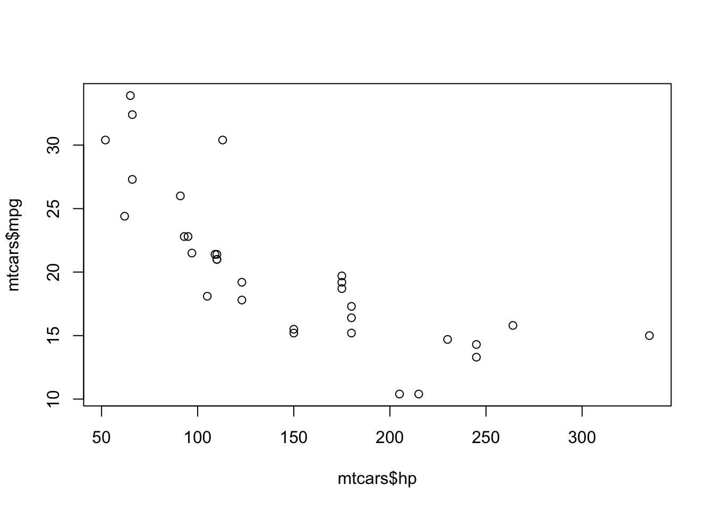
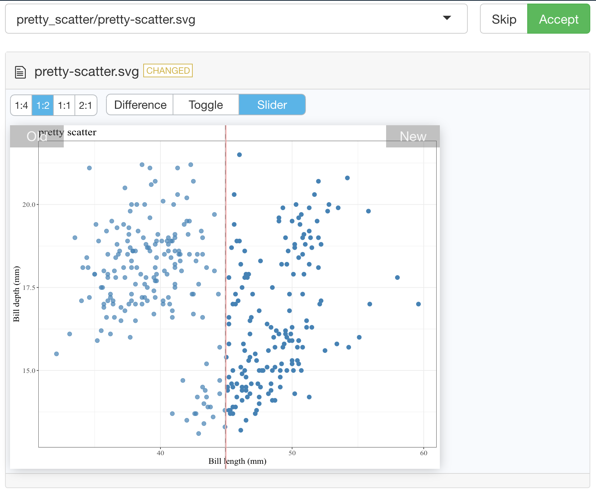
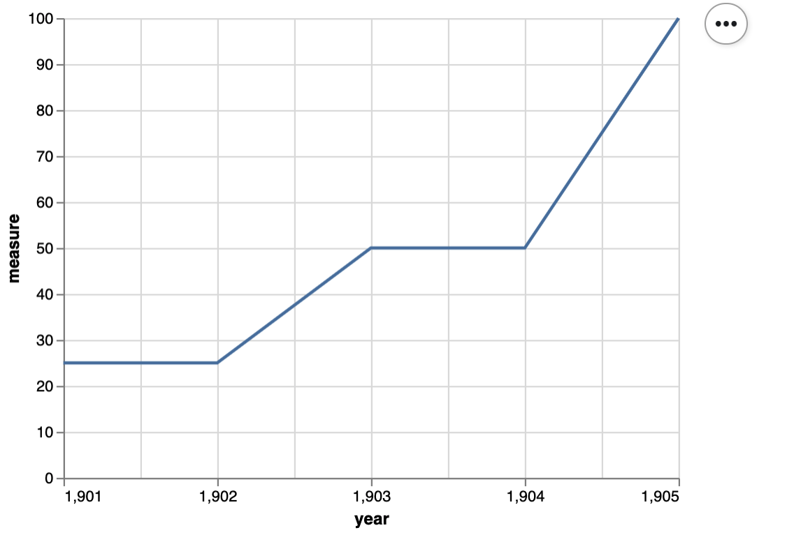

#' Count class observations
#'
#' Creates a new data frame with two columns,
#' listing the classes present in the input data frame,
#' and the number of observations for each class.
#'
#' @param data_frame A data frame or data frame extension (e.g. a tibble).
#' @param class_col unquoted column name of column containing class labels
#'
#' @return A data frame with two columns.
#' The first column (named class) lists the classes from the input data frame.
#' The second column (named count) lists the number of observations
#' for each class from the input data frame.
#' It will have one row for each class present in input data frame.
#'
#' @export
#' @examples
#' count_classes(mtcars, am)
count_classes <- function(data_frame, class_col) {
# returns a data frame with two columns: class and count
}18 Introduction to testing code for data science
Learning Objectives
- Fully specify a function and write comprehensive tests against the specification.
- Reproducibly generate test data (e.g., data frames, models, plots).
- Discuss the observability of unit outputs in data science (e.g., plot objects), and how this should be taken into account when designing software.
- Explain why test-driven development (TDD) affords testability
- Use exceptions when writing code.
- Test if a function is throwing an exception when it should, and that is does not do so when it shouldn’t.
- Evaluate test suite quality.
How do we ensure our code works as expected? That the code outputs are what we expect, and our code handles user errors in expected ways. We test it! Tests help to increase the robustness and trustworthiness of your code. In this chapter we will introduce formal software testing concepts and practices that are applicable to data science.
The first concept we will consider is testability. Testability is defined as the degree to which a system or component facilitates the establishment of test objectives and the execution of tests to determine whether those objectives have been achieved. In order to be successful, a test needs to be able to execute the code you wish to test, in a way that can trigger a defect that will propagate an incorrect result to a program point where it can be checked against the expected behaviour. From this, we can derive four high-level properties required for effective test writing and execution. These are controllability, observability, isolateablilty, and automatability.
- controllability: the code under test needs to be able to be programmatically controlled
- observability: the outcome of the code under test needs to be able to be verified
- isolateablilty: the code under test needs to be able to be validated on its own
- automatability: the tests should be able to be executed automatically
Source: CPSC 310 & CPSC 410 class notes from Reid Holmes, UBC]
Functions are individual units of code that perform a specific task. They are useful for increasing code modularity - this helps with reusability and readability. Functions also are critical in ensuring our code is testable by facilitating that our code has the four high-level properties required for effective test writing and execution introduced above. Functions allow our code to be controlled and automated (we can execute it by calling the function) and if we write our functions using best practices (e.g., functions do just one and they typically return an object) then our code is also isolateable and observable.
When should you write a function? Is it just when you start re-writing code for the second or third time? No, actually most code you write should be a function, as that helps with testability. You can even write your tests before you write your function, you just have to have planned what function inputs and outputs to expect. Writing your tests before implementing your function can even improve your productivity (Erdogmus, Morisio, and Torchiano 2005)! In software engineering, writting your tests before your functions is called “Test Driven Development” (Becker 2002).
What kinds of tests do we write for our functions? I like to think about three broad categories of tests, and then write 2-3 tests for each (or more if the function is complex):
- Simple expected use cases
- Edge cases (unexpected, or rare use cases)
- Abnormal, error or adversarial use cases.
We will walk through some specific examples of each of these later in this chapter.
How many tests do we write? There is no concrete answer to this question. It is finding the right balance between having enough test cases that you cover a variety of the possible uses cases of your function, ensuring that the correct behaviour occurs in each of these, without spending too much time on writing tests. As with many functions, the possible ways a function could be used, and the many resultant outputs from it means that it is often impossible to test everything.
18.1 Workflow for writing functions and tests for data science
How should we get started writing functions and tests for data science? There are many ways one could proceed, however some paths will be more efficient and less error-prone, and more robust than others. Borrowing from software development best practices, one recommended workflow is shown below:
Write the function specifications and documentation - but do not implement the function. This means that you will have an empty function, that specifies and documents what the name of the function is, what arguments it takes, and what it returns.
Plan the test cases and document them. Your tests should assess whether the function works as expected when given correct inputs, as well as that it behaves as expected when given incorrect inputs (e.g., throws an error when the wrong type is given for an argument). For the cases of correct inputs, you will want to test the top, middle and bottom range of these, as well as all possible combinations of argument inputs possible. Also, the test data should be as simple and tractable as possible while still being able to assess your function.
Create test data that is useful for assessing whether your function works as expected. In data science, you likely need to create both the data that you would provide as inputs to your function, as well as the data that you would expect your function to return.
Write the tests to evaluate your function based on the planned test cases and test data.
Implement the function by writing the needed code in the function body to pass the tests.
Iterate between steps 2-5 to improve the test coverage and function.
18.1.1 Example of workflow for writing functions and tests for data science
Let’s say we want to write a function for a task we repeatedly are performing in our data analysis. For example, summarizing the number of observations in each class. This is a common task performed for almost every classification problem to examine how many classes there are to understand if we are facing a binary or multi-class classification problem, as well as to examine whether there are any class imbalances that we may need to deal with before tuning our models.
1. Write the function specifications and documentation - but do not implement the function:
The first thing we should do is write the function specifications and documentation. This can effectively represented by an empty function and roxygen2-styled documentation in R as shown below:
2. Plan the test cases and document them:
Next, we should plan out our test cases and start to document them. At this point we can sketch out a skeleton for our test cases with code, but we are not yet ready to write them, as we first will need to reproducibly create test data that is useful for assessing whether your function works as expected. So considering our function specifications, some kinds of input we might anticipate our function may receive, and correspondingly what it should return is listed below:
Simple expected use test case #1
- Dataframe with 2 classes, with 2 observations per class
Function input:
- dataframe
class_labels values
1 class1 0.2
2 class2 0.5
3 class1 0.8
4 class2 0.5- unquoted column name
class_labelsExpected function output:
Dataframe (or tibble)
class count
1 class1 2
2 class2 2Simple expected use test case #2
- Dataframe with 2 classes, with 2 observations for one class, and only one observation in the other
Function input:
- dataframe
class_labels values
1 class1 1.0
2 class1 0.9
3 class2 0.9- unquoted column name
class_labelsExpected function output:
Dataframe (or tibble)
class count
1 class1 2
2 class2 1Edge test case #1
- Dataframe with 1 classes, with 2 observations for that class
Function input:
- dataframe
class_labels values
1 class1 0.7
2 class1 0.5- unquoted column name
class_labelsExpected function output:
Dataframe (or tibble)
class count
1 class1 2Edge test case #2
- Dataframe with no class observations
Function input:
- dataframe
class_labels values- unquoted column name
class_labelsExpected function output:
Dataframe (or tibble)
class count18.1.2 Error test case #1
- A list with 2 classes, with 2 observations for each class
Function input:
- list
$class_labels
[1] "class1" "class2" "class1" "class2"
$values
[1] 0.4 0.7 0.0 0.6- unquoted list element name
class_labelsExpected function output:
Error
Error :
`data_frame` should be a dataframe or dataframe extension (e.g. a tibble)Next, I sketch out a skeleton for the unit tests. For R, we will use the well maintained and popular testthat R package for writing our tests. For extra resources on testthat beyond what is demonstrated here, we recommend reading: - testthat documentation - Testing chapter of the R packages book
With testthat we create a test_that statement for each related group of tests for a function. For our example, we will create the four test_that statements shown below:
library(testthat)
test_that("`count_classes` should return a data frame, or tibble,
with the number of rows corresponding to the number of unique classes
in the `class_col` from the original dataframe. The new dataframe
will have a `class column` whose values are the unique classes,
and a `count` column, whose values will be the number of observations
for each class", {
# "expected use cases" tests to be added here
})
test_that("`count_classes` should return an empty data frame, or tibble,
if the input to the function is an empty data frame", {
# "edge cases" test to be added here
})
test_that("`count_classes` should throw an error when incorrect types
are passed to the `data_frame` argument", {
# "error" tests to be added here
})3. Create test data that is useful for assessing whether your function works as expected:
Now that we have a plan, we can create reproducible test data for that plan! When we do this, we want to keep our data as small and tractable as possible. We want to test things we know the answer to, or can at a minimum calculate by hand. We will use R code to reproducibly create the test data. We will need to do this for the data we will feed in as inputs to our function in the tests, as well as the data we expect our function to return.
library(dplyr)
set.seed(2024)
# test input data
two_classes_2_obs <- tibble(class_labels = rep(c("class1",
"class2"), 2),
values = round(runif(4), 1))
two_classes_2_and_1_obs <- tibble(class_labels = c(rep("class1", 2),
"class2"),
values = round(runif(3), 1))
one_class_2_obs <- tibble(class_labels = c("class1", "class1"),
values = round(runif(2), 1))
empty_df <- tibble(class_labels = character(0),
values = double(0))
two_classes_two_obs_as_list <- list(class_labels = rep(c("class1",
"class2"), 2),
values = round(runif(4), 1))
# expected test outputs
two_classes_2_obs_output <- tibble(class = c("class1", "class2"),
count = c(2,2))
two_classes_2_and_1_obs_output <- tibble(class = c("class1", "class2"),
count = c(2, 1))
one_class_2_obs_output <- tibble(class = "class1",
count = 2)
empty_df_output <- tibble(class = character(0),
count = numeric(0))4. Write the tests to evaluate your function based on the planned test cases and test data:
Now that we have the skeletons for our tests, and our reproducible test data, we can actually write the internals for our tests! We will do this by using expect_* functions from the testthat package. The table below shows some of the most commonly used expect_* functions. However, there are many more that can be found in the testthat expectations reference documentation.
testthat test structure:
test_that("Message to print if test fails", expect_*(...))Common expect_* statements for use with test_that
Is the object equal to a value?
expect_identical- test two objects for being exactly equalexpect_equal- compare R objects x and y testing ‘near equality’ (can set a tolerance)expect_equivalent- compare R objects x and y testing ‘near equality’ (can set a tolerance) and does not assess attributes
Does code produce an output/message/warning/error?
expect_error- tests if an expression throws an errorexpect_warning- tests whether an expression outputs a warningexpect_output- tests that print output matches a specified value
Is the object true/false?
These are fall-back expectations that you can use when none of the other more specific expectations apply. The disadvantage is that you may get a less informative error message.
expect_true- tests if the object returnsTRUEexpect_false- tests if the object returnsFALSE
test_that("`count_classes` should return a data frame, or tibble,
with the number of rows corresponding to the number of unique classes
in the `class_col` from the original dataframe. The new dataframe
will have a `class column` whose values are the unique classes,
and a `count` column, whose values will be the number of observations
for each class", {
expect_s3_class(count_classes(two_classes_2_obs, class_labels),
"data.frame")
expect_equal(count_classes(two_classes_2_obs, class_labels),
two_classes_2_obs_output, ignore_attr = TRUE)
expect_equal(count_classes(two_classes_2_and_1_obs, class_labels),
two_classes_2_and_1_obs_output, ignore_attr = TRUE)
})── Failure: `count_classes` should return a data frame, or tibble,
with the number of rows corresponding to the number of unique classes
in the `class_col` from the original dataframe. The new dataframe
will have a `class column` whose values are the unique classes,
and a `count` column, whose values will be the number of observations
for each class ──
count_classes(two_classes_2_obs, class_labels) is not an S3 object
── Failure: `count_classes` should return a data frame, or tibble,
with the number of rows corresponding to the number of unique classes
in the `class_col` from the original dataframe. The new dataframe
will have a `class column` whose values are the unique classes,
and a `count` column, whose values will be the number of observations
for each class ──
count_classes(two_classes_2_obs, class_labels) not equal to `two_classes_2_obs_output`.
target is NULL, current is tbl_df
── Failure: `count_classes` should return a data frame, or tibble,
with the number of rows corresponding to the number of unique classes
in the `class_col` from the original dataframe. The new dataframe
will have a `class column` whose values are the unique classes,
and a `count` column, whose values will be the number of observations
for each class ──
count_classes(two_classes_2_and_1_obs, class_labels) not equal to `two_classes_2_and_1_obs_output`.
target is NULL, current is tbl_dfError:
! Test failedtest_that("`count_classes` should return an empty data frame, or tibble,
if the input to the function is an empty data frame", {
expect_equal(count_classes(one_class_2_obs, class_labels),
one_class_2_obs_output, ignore_attr = TRUE)
expect_equal(count_classes(empty_df, class_labels),
empty_df_output, ignore_attr = TRUE)
})── Failure: `count_classes` should return an empty data frame, or tibble,
if the input to the function is an empty data frame ──
count_classes(one_class_2_obs, class_labels) not equal to `one_class_2_obs_output`.
target is NULL, current is tbl_df
── Failure: `count_classes` should return an empty data frame, or tibble,
if the input to the function is an empty data frame ──
count_classes(empty_df, class_labels) not equal to `empty_df_output`.
target is NULL, current is tbl_dfError:
! Test failedtest_that("`count_classes` should throw an error when incorrect types
are passed to the `data_frame` argument", {
expect_error(count_classes(two_classes_two_obs_as_list, class_lables))
})── Failure: `count_classes` should throw an error when incorrect types
are passed to the `data_frame` argument ──
`count_classes(two_classes_two_obs_as_list, class_lables)` did not throw an error.Error:
! Test failedWait what??? Most of our tests fail…
Yes, we expect that, we haven’t written our function body yet!
5. Implement the function by writing the needed code in the function body to pass the tests:
FINALLY!! We can write the function body for our function! And then call our tests to see if they pass!
#' Count class observations
#'
#' Creates a new data frame with two columns,
#' listing the classes present in the input data frame,
#' and the number of observations for each class.
#'
#' @param data_frame A data frame or data frame extension (e.g. a tibble).
#' @param class_col unquoted column name of column containing class labels
#'
#' @return A data frame with two columns.
#' The first column (named class) lists the classes from the input data frame.
#' The second column (named count) lists the number of observations for each class from the input data frame.
#' It will have one row for each class present in input data frame.
#'
#' @export
#'
#' @examples
#' count_classes(mtcars, am)
count_classes <- function(data_frame, class_col) {
if (!is.data.frame(data_frame)) {
stop("`data_frame` should be a data frame or data frame extension (e.g. a tibble)")
}
data_frame |>
dplyr::group_by({{ class_col }}) |>
dplyr::summarize(count = dplyr::n()) |>
dplyr::rename("class" = {{ class_col }})
}
Note
we recommending using the syntax
PACKAGE_NAME::FUNCTION()when writing functions that will be sourced into other files in R to make it explicitly clear what external packages they depend on. This becomes even more important when we create R packages from our functions later.group_bywill throw a fairly useful error message ofclass_colis not found indata_frame, and we we can letgroup_byhandle that error case instead of writing our own exception to throw an error on.
test_that("`count_classes` should return a data frame, or tibble,
with the number of rows corresponding to the number of unique classes
in the `class_col` from the original dataframe. The new dataframe
will have a `class column` whose values are the unique classes,
and a `count` column, whose values will be the number of observations
for each class", {
expect_s3_class(count_classes(two_classes_2_obs, class_labels),
"data.frame")
expect_equal(count_classes(two_classes_2_obs, class_labels),
two_classes_2_obs_output, ignore_attr = TRUE)
expect_equal(count_classes(two_classes_2_and_1_obs, class_labels),
two_classes_2_and_1_obs_output, ignore_attr = TRUE)
})Test passed 😸test_that("`count_classes` should return an empty data frame, or tibble,
if the input to the function is an empty data frame", {
expect_equal(count_classes(one_class_2_obs, class_labels),
one_class_2_obs_output, ignore_attr = TRUE)
expect_equal(count_classes(empty_df, class_labels),
empty_df_output, ignore_attr = TRUE)
})Test passed 🥇test_that("`count_classes` should throw an error when incorrect types
are passed to the `data_frame` argument", {
expect_error(count_classes(two_classes_two_obs_as_list, class_lables))
})Test passed 🎉The tests passed!

Are we done? For the purposes of this demo, yes! However in practice you would usually cycle through steps 2-5 two-three more times to further improve our tests and and function!
Discussion: Does test-driven development afford testability? How might it do so? Let’s discuss controllability, observability, isolateablilty, and automatability in our case study of test-driven development of count_classes.
18.1.3 Where do the function and test files go?
In the workflow above, we skipped over where we should put our functions we will use in our data analyses, as well as where we put the tests for our function, and how we call those tests!
We summarize the answer to these questions below, but highly recommend you explore and test out our demonstration GitHub repository that has a minimal working example of this: https://github.com/ttimbers/demo-tests-ds-analysis
We also have a Python example here: https://github.com/ttimbers/demo-tests-ds-analysis-python
Where does the function go?
In R, functions should be abstracted to R scripts (plain text files that end in .R) which live in the project’s R directory. Commonly we name the R script with the same name as the function (however, we might choose a more general name if the R script contains many functions).
In the analysis file where we call the function (e.g. eda.ipynb) we need to call source("PATH_TO_FILE_CONTAINING_FUNCTION") before we are able to use the function(s) contained in that R script inside our analysis file.
Where do the tests go?
The tests for the function should live in tests/testthat/test-FUNCTION_NAME.R, and the code to reproducibly generate helper data for the tests lives in tests/testthat/helper-FUNCTION_NAME.R. The test suite can be run via testthat::test_dir("tests/testthat"). testthat::test_dir("tests/testthat") first runs any files that begin with helper* and then any files that begin with test*.
Convenience functions for setting this up
Several usethis R package functions can be used to setup the file and directory structure needed for this: - usethis::use_r("FUNCTION_NAME") can be used to create the R script file the function should live in, inside the R directory - usethis::use_testthat() can be used to create the necessary test directories to use testthat’s automated test suite execution function (testthat::test_dir("tests/testthat")) - usethis::use_test("FUNCTION_NAME") can be used to create the test file for each function
Note: tests/testthat/helper-FUNCTION_NAME.R needs to be created manually, as there is no usethis function to automate this.
18.2 Reproducibly generating test data
As highlighted above, where at all possible, we should use code to generate reproducible, simple and tractable helper data for our tests. When using the testthat R package in R to automate the running of the test suite, the convention is to put such code in a file named helper-FUNCTION_NAME.R which should live in the tests/testthat directory.
18.3 Common types of test levels in data science
Unit tests - exercise individual components, usually methods or functions, in isolation. This kind of testing is usually quick to write and the tests incur low maintenance effort since they touch such small parts of the system. They typically ensure that the unit fulfills its contract making test failures more straightforward to understand. This is the kind of tests we wrote for our example for
count_classesabove.Integration tests - exercise groups of components to ensure that their contained units interact correctly together. Integration tests touch much larger pieces of the system and are more prone to spurious failure. Since these tests validate many different units in concert, identifying the root-cause of a specific failure can be difficult. In data science, this might be testing whether several functions that call each other, or run in sequence, work as expected (e.g., tests for a
tidymodel’sworkflowfunction)
18.4 Observability of unit outputs in data science
Observability is defined as the extent to which the response of the code under test (here our functions) to a test can be verified.
Questions we should ask when trying to understand how observable our tests are: - What do we have to do to identify pass/fail? - How expensive is it to do this? - Can we extract the result from the code under test? - Do we know enough to identify pass/fail?
Source: CPSC 410 class notes from Reid Holmes, UBC
These questions are easier to answer and address for code that creates simpler data science objects such as data frames, as in the example above. However, when our code under test does something more complex, such as create a plot object, these questions are harder to answer, or can be answered less fully…
Let’s talk about how we might test code to create plots!
18.4.1 Visual regression testing
When we use certain data visualization libraries, we might think that we can test all code that generates data visualizations similar to code that generates more traditional data objects, such as data frames.
For example, when we create a scatter plot object with ggplot2, we can easily observe many of it’s values and attributes. We show an example below:
options(repr.plot.width = 4, repr.plot.height = 4)cars_ggplot_scatter <- ggplot2::ggplot(mtcars, ggplot2::aes(hp, mpg)) +
ggplot2::geom_point()
cars_ggplot_scatter
cars_ggplot_scatter$layers[[1]]$geom<ggproto object: Class GeomPoint, Geom, gg>
aesthetics: function
default_aes: uneval
draw_group: function
draw_key: function
draw_layer: function
draw_panel: function
extra_params: na.rm
handle_na: function
non_missing_aes: size shape colour
optional_aes:
parameters: function
rename_size: FALSE
required_aes: x y
setup_data: function
setup_params: function
use_defaults: function
super: <ggproto object: Class Geom, gg>cars_ggplot_scatter$mapping$x<quosure>
expr: ^hp
env: globalAnd so we could write some tests for a function that created a ggplot2 object like so:
#' scatter2d
#'
#' A short-cut function for creating 2 dimensional scatterplots via ggplot2.
#'
#' @param data data.frame or tibble
#' @param x unquoted column name to plot on the x-axis from data data.frame or tibble
#' @param y unquoted column name to plot on the y-axis from data data.frame or tibble
#'
#' @return
#' @export
#'
#' @examples
#' scatter2d(mtcars, hp, mpg)
scatter2d <- function(data, x, y) {
ggplot2::ggplot(data, ggplot2::aes(x = {{x}}, y = {{y}})) +
ggplot2::geom_point()
}
helper_data <- dplyr::tibble(x_vals = c(2, 4, 6),
y_vals = c(2, 4, 6))
helper_plot2d <- scatter2d(helper_data, x_vals, y_vals)
test_that('Plot should use geom_point and map x to x-axis, and y to y-axis.', {
expect_true("GeomPoint" %in% c(class(helper_plot2d$layers[[1]]$geom)))
expect_true("x_vals" == rlang::get_expr(helper_plot2d$mapping$x))
expect_true("y_vals" == rlang::get_expr(helper_plot2d$mapping$y))
})Test passed 🌈However, when we create a similar plot object using base R, we do not get an object back at all…
cars_scatter <- plot(mtcars$hp, mtcars$mpg)
typeof(cars_scatter)[1] "NULL"class(cars_scatter)[1] "NULL"So as you can see, testing plot objects can be more challenging. In the cases of several commonly used plotting functions and package in R and Python, the objects created are not rich objects with attributes that can be easily accessed (or accessed at all). Plotting packages likeggplot2 (R) and altair (Python) which do create rich objects with observable values and attributes appear to be exceptions, rather than the rule. Thus, regression testing against an image generated by the plotting function is often the “best we can do”, or because of this history, what is commonly done.
Regression Testing
Regression testing is defined as tests that check that recent changes to the code base do not break already implemented features.
Thus, once a desired plot is generated from the plotting function, visual regression tests can be used to ensure that further code refactoring does not change the plot function. Tools for this exist for R in the vdiffr package. Matplotlib uses visual regression testing as well, you can see the docs for examples of this here.
Visual regression testing with vdiffr
Say you have a function that creates a nicely formatted scatter plot using ggplot2, such as the one shown below:
pretty_scatter <- function(.data, x_axis_col, y_axis_col) {
ggplot2::ggplot(data = .data,
ggplot2::aes(x = {{ x_axis_col }}, y = {{ y_axis_col }})) +
ggplot2::geom_point(alpha = 0.8, colour = "steelblue", size = 3) +
ggplot2::theme_bw() +
ggplot2::theme(text = ggplot2::element_text(size = 14))
}
library(palmerpenguins)
library(ggplot2)
penguins_scatter <- pretty_scatter(penguins, bill_length_mm, bill_depth_mm) +
labs(x = "Bill length (mm)", y = "Bill depth (mm)")
penguins_scatterWarning: Removed 2 rows containing missing values or values outside the scale range
(`geom_point()`).
What is so pretty about this scatter plot? Compared to the default settings of a scatter plot created in
ggplot2this scatter plot has a white instead of grey background, has blue points instead of black, has larger points, and they points have a bit of transparency so you can see some overlapping data points.
Now, say that you want to write tests to make sure that as you further develop and refactor your data visualization code, you do not break it or change the plot (because you have decided you are happy with what it looks like). You can use the vdiffr visual regression testing package to do this. First, you need to abstract the function to an R script that lives in R. For this case, we would create a file called R/pretty_scatter.R that houses the pretty_scatter function shown above.
Then you need to setup a tests directory and test file in which to house your tests that works with the testthat framework (we recommend using usethis::use_testthat() and usethis::use_test("FUNCTION_NAME") to do this).
Finally, add an expectation with vdiffr::expect_doppelganger to your test_that statement:
library(palmerpenguins)
library(ggplot2)
library(vdiffr)
source("../../R/pretty_scatter.R")
penguins_scatter <- pretty_scatter(penguins, bill_length_mm, bill_depth_mm) +
labs(x = "Bill length (mm)", y = "Bill depth (mm)")
penguins_scatter
test_that("refactoring our code should not change our plot", {
expect_doppelganger("pretty scatter", penguins_scatter)
})Then when you run testthat::test_dir("tests/testthat") to run your test suite for the first time, it will take a snapshot of the figure created in your test for that visualization and save it to tests/testthat/_snaps/EXPECT_DOPPELGANGER_TITLE.svg. Then as you refactor your code, you and run testthat::test_dir("tests/testthat") it will compare a new snapshot of the figure with the existing one. If they differ, the tests will fail. You can then run testthat::snapshot_review() to get an interactive viewer which will let you compare the two data visualizations and allow you to either choose to accept the new snapshot (if you wish to include the changes to the data visualization as part of your code revision and refactoring) or you can stop the app and revert/fix some of your code changes so that the data visualization is not unintentionally changed.
Below we show an example of running testthat::snapshot_review() after we made our tests fail by removing alpha = 0.8 from our pretty_scatter function source:

vdiffr demo
In this GitHub repository, we have created a vdiffr demo based on the case above: https://github.com/ttimbers/vdiffr-demo
To get experience and practice using this, we recommend forking this, and then cloning it so that you can try using this, and building off it locally.
Exercise 1
Inside RStudio, run
testthat::test_dir("tests/testthat")to ensure you can get the tests to pass as they exist in the demo.Change something about the code in
R/pretty_scatter.Rthat will change what the plot looks like (text size, point colour, type of geom used, etc).Run
testthat::test_dir("tests/testthat")and see if the tests fail. If they do, runtestthat::snapshot_review()to explore the differences in the two image snapshots. You may be prompted to install a couple R packages to get this working.Add another plot function to the project and create a test for it using
testthatandvdiffr.
18.4.2 Example tests for altair plots (using object attributes not visual regression testing)
Here’s a function that creates a scatter plot:
def scatter(df, x_axis, y_axis):
chart = alt.Chart(df).mark_line().encode(
alt.X(x_axis + ':Q',
scale=alt.Scale(zero=False),
axis=alt.Axis(tickMinStep=1)
),
y=y_axis
)
return chartHere’s some small data to test it on:
small_data = pd.DataFrame({
'year': np.array([1901, 1902, 1903, 1904, 1905]),
'measure' : np.array([25, 25, 50, 50, 100])
})
small_dataHere’s the plot:
small_scatter = scatter(small_data, 'year', 'measure')
small_scatter
Here’s a unit test for the scatter function:
def test_scatter():
assert small_scatter.encoding.x.field == 'year', 'x_axis should be mapped to the x axis'
assert small_scatter.encoding.y.field == 'measure', 'y_axis should be mapped to the y axis'
assert small_scatter.mark == 'line', 'mark should be a line'
assert small_scatter.encoding.x.scale.zero == False, "x-axis should not start at 0"
assert small_scatter.encoding.x.axis.tickMinStep == 1, "x-axis small tick step should be 1"18.5 Testing in Python resources
- testing in Python with Pytest (from the Python packages book)
- Pytest documentation
- Testing Software (from the Research Software Engineering with Python book)
18.6 Attribution:
- Advanced R by Hadley Wickham
- The Tidynomicon by Greg Wilson
- CPSC 310 and CPSC 410 class notes by Reid Holmes, UBC